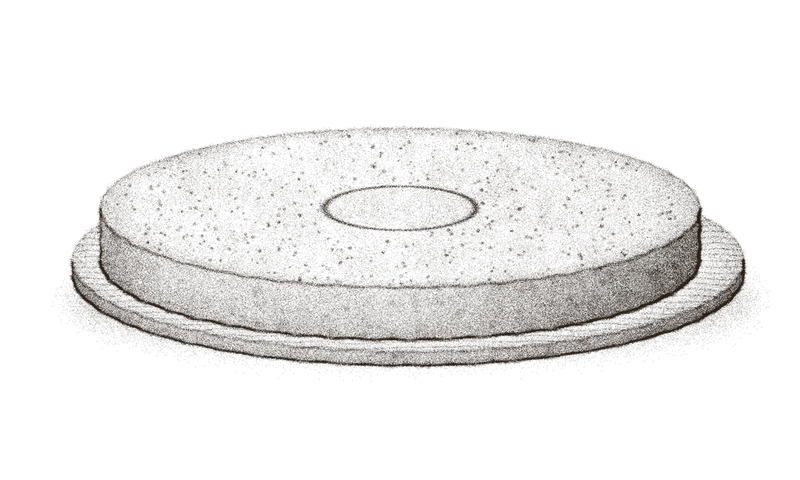
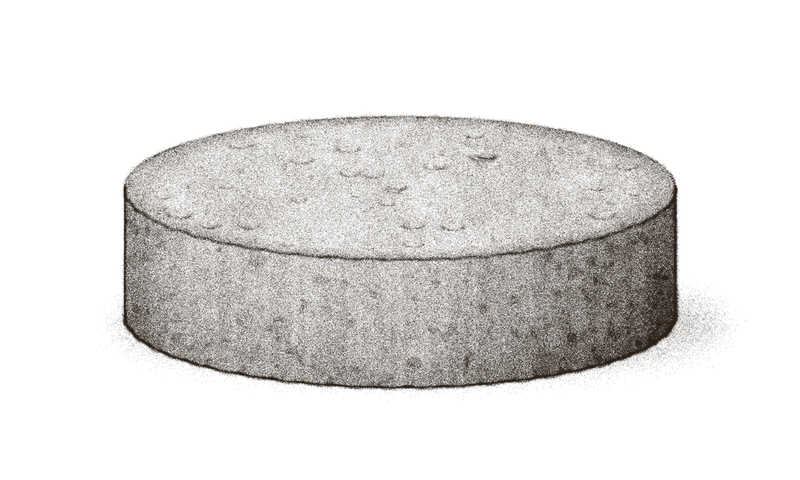
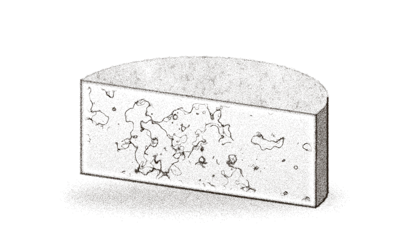
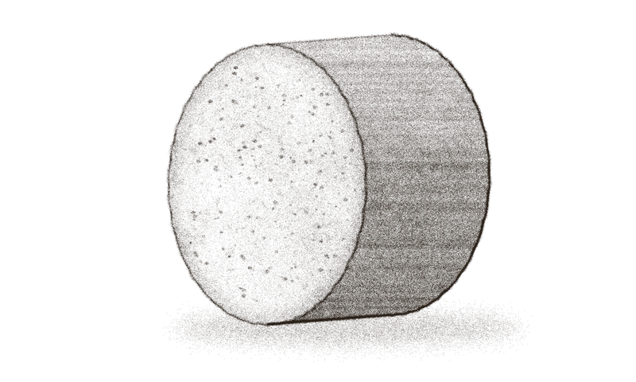
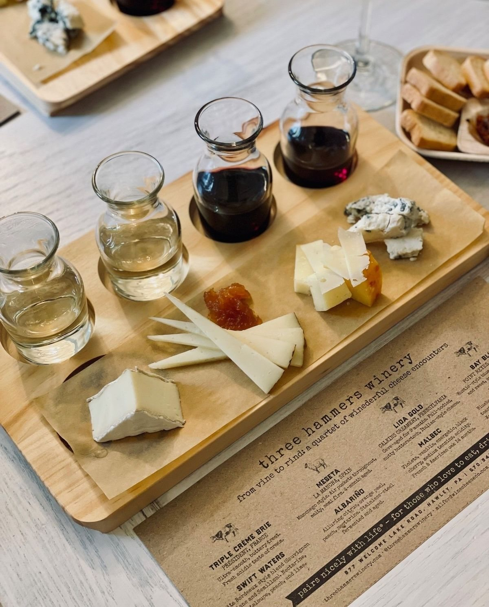

Nº 01PLANCHE

Fromage Frais
프레시 · 소젖
“갓 만든 우유의 단맛과 산뜻한 산미”
- 숙성
- 1주
- 산지
- Savoie
- 가격
- 100g · 7,500원
Aujourd'hui
Visiter la Boutique →Nº I — Catalogue
L'Affiné의 숙성고에서 시간을 보낸 아홉 가지 치즈

L'Affinage숙성 기간으로 고르기
9spécimens
프레시 · 소젖
“갓 만든 우유의 단맛과 산뜻한 산미”

연성 · 염소젖
“헤이즐넛 향이 은은한 염소젖 치즈”

연성 · 소젖
“크리미한 속살과 버섯 향의 껍질”

반경성 · 소젖
“회색 껍질 아래 부드러운 흙내음”

블루 · 소젖
“푸른 결이 주는 짭조름한 여운”

반경성 · 소젖
“녹였을 때 비로소 완성되는 고소함”

반경성 · 소젖
“과일 향과 가벼운 쌉쌀함의 균형”
경성 · 소젖
“알프스 목초의 꽃향과 깊은 감칠맛”

경성 · 소젖
“결정이 씹히는 진한 견과 풍미”
Aucun spécimen조건에 맞는 치즈가 없습니다. 필터를 조정해 보세요.
